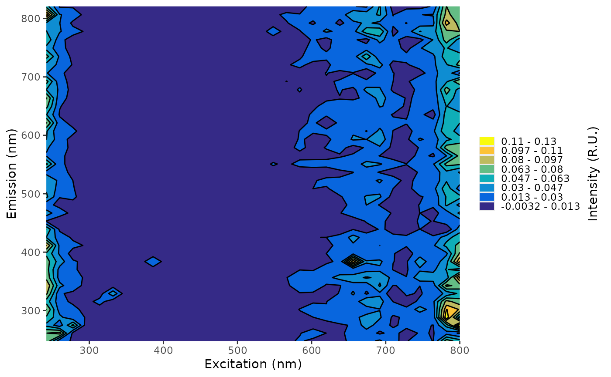

Looks for the specified QAQC files (MDL and check standards) within the qaqc_dir specified in
the config file. If more than one set is found, it will prompt the user to specify which
method they want to use. This will be stored in the local copy of the config which will
be maintained for the session. Will also provide warnings and write to the readme to note if
no files were found or what method was used.
Arguments
- qaqc_dir
file path to the mdl files generated with create_mdl
- type
Either "mdl" or "check-std" to specify the type of QA/QC files to return.
- method
Character of the method to use for the QAQC files.
- quiet
Logical. Should function warn if default is used?
Value
A list of length 3:
eem-*:
NULLif not found, otherwise the requested QAQC file for eems.abs-*:
NULLif not found, otherwise the requested QAQC file for absorbance.method: The name of the method chosen,
NULLif no files are found.
Examples
#No directory will return NULL
get_qaqc(NA, type="mdl", quiet =TRUE)
#> $eem_mdl
#> NULL
#>
#> $abs_mdl
#> NULL
#>
#> $method
#> NULL
#>
#Otherwise will try to return the requested QAQC files
mdl <- get_qaqc(file.path(system.file("extdata", package = "eemanalyzeR")), type = "mdl")
plot(mdl$eem_mdl)
